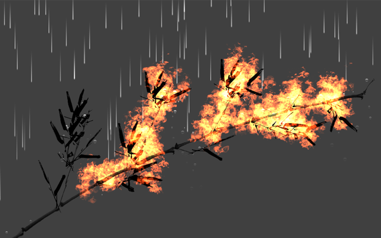

Honors students at UT Austin complete a thesis (CS 379H) or become covered in shame and graduate as non-honors poseurs. The thesis is a bit smaller in scope than, say, a master's thesis. I did mine under advisor Fussell and second reader Lin. My thesis was about simulating trees in real time. It involved a lot of game loop, physics, and graphics nonsense.
In retrospect, as a research work I spent little time examining prior work and too much time hand-rolling my own physics. No regrets though, was great for learning how to fucking code.
Find it in this page of reports, precisely PDF link here, or locally: [ ]
Here, uses deck.js.
TODO: actual link.
Not particularly user-friendly. TODO: controls
[ ]
